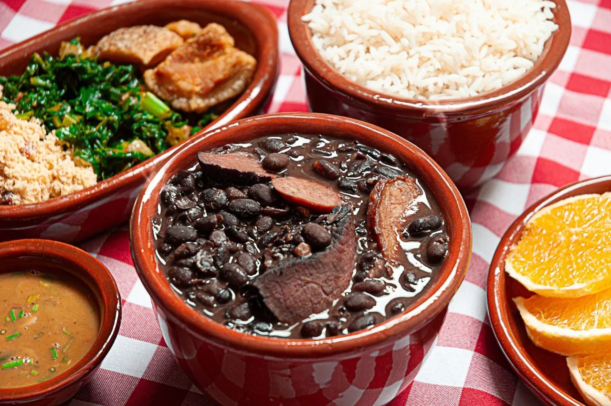
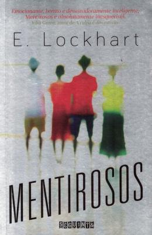

Parte 1 – Minha comida favorita:

- Eu gosto de feijoada porque ela me lembra momentos de união e alegria. O sabor marcante, com o feijão bem temperado e as carnes suculentas, traz uma sensação de conforto. Além disso, é um prato que combina tradição e afeto, sempre presente em encontros especiais.
Parte 2 – Meu hobby/passatempo favorito
Ler

- O livro Mentirosos é meu favorito porque me prendeu do começo ao fim. A trama cheia de mistério e reviravoltas me fez pensar sobre família, segredos e até sobre a forma como enxergamos a verdade. É uma história intensa que mexeu comigo e deixou uma marca.
Parte 3 – Um lugar que quero conhecer
Canadá
- Quero visitar o Canadá porque sempre ouvi falar das paisagens incríveis, cheias de lagos, montanhas e florestas. Além disso, é um lugar que mistura natureza, cultura e qualidade de vida, e acho que seria uma experiência inesquecível conhecer esse país
Parte 4 – Filme/Serie favorito
Sociedade dos Poetas Mortos (1989)
"Carpe Diem. Aproveitem o dia, rapazes. Tornem suas vidas extraordinárias." – uma das frases mais marcantes do filme, que resume a essência da história: viver intensamente, valorizar a liberdade de pensamento e acreditar no poder transformador da arte e da poesia.
Personagens Principais:
John Keating
Neil Perry
Todd Anderson
Atores principais:
Robin Williams
Robert Sean Leonard
Ethan Hawke
Parte 5 – Cantor(a) ou Banda favorita
Lana Del Rey
História
- Lana Del Rey é uma cantora e compositora americana conhecida por seu estilo único que mistura pop, indie e música retrô. Desde o início de sua carreira, ela chamou atenção por sua voz marcante e pelas letras que exploram amor, tristeza e nostalgia. Seus álbuns são reconhecidos por criar atmosferas cinematográficas e intensas.
Músicas
- Ela é famosa por suas canções melancólicas e poéticas, que muitas vezes remetem aos anos 50 e 60, mas com uma pegada moderna e emocional.
Por que eu gosto:
- Gosto de Lana Del Rey porque suas músicas me envolvem de um jeito único: cada letra e melodia parecem contar uma história profunda e cheia de sentimentos. Sua voz e estilo me fazem viajar para outro mundo, e adoro como ela consegue transmitir emoção verdadeira em cada canção.
Principais músicas/álbuns:
Born to Die (álbum)
Summertime Sadness (música)
Young and Beautiful (música)